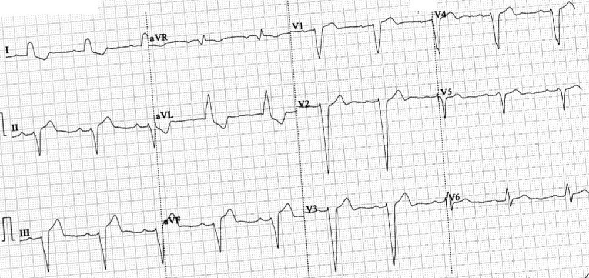
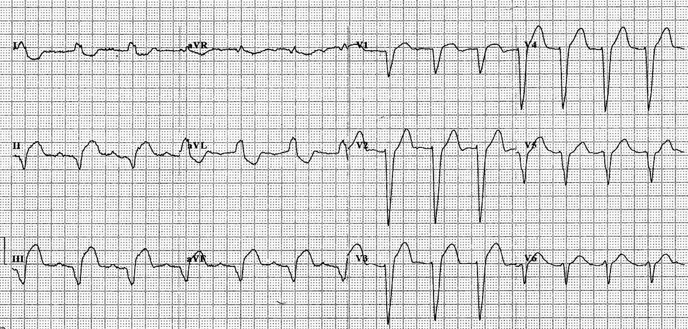
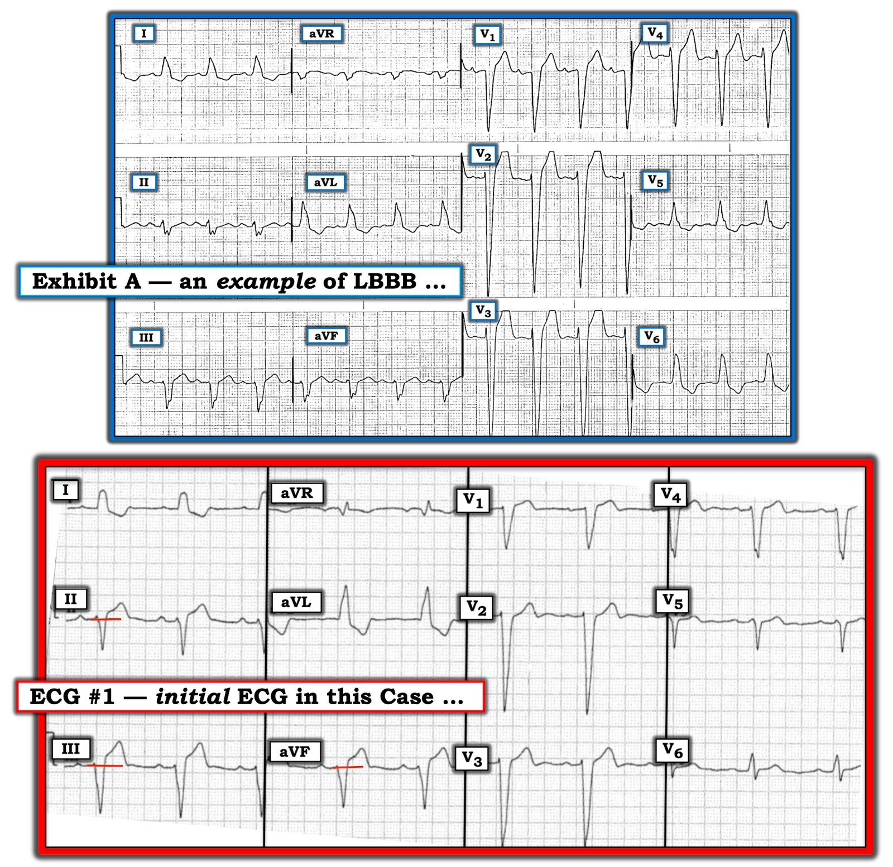

07/04/2019 — Tuân thủ tiêu chuẩn một cách cứng nhắc, kể cả Tiêu chuẩn Sgarbossa cải biên, có thể gây chết người
Bản dịch tiếng Việt của bài "Following Criteria Exactly, even the Modified Sgarbossa Criteria, Can Be Deadly" – Dr. Smith’s ECG Blog. Giữ nguyên toàn bộ 5 hình ảnh của bản gốc.
Ca này do một bạn đọc gửi tới:
Kính gửi Dr. Smith,
Tôi là bác sĩ nội trú cấp cứu và là một bạn đọc khá mới của blog của ông. Tôi viết thư này để hỏi ý kiến ông về một điện tâm đồ mà một đồng nghiệp của tôi gặp gần đây.
Bệnh nhân là nam, 70 mấy tuổi, trước đây khỏe mạnh, không dùng thuốc gì, đến khoa cấp cứu (ED) vì đau thượng vị, khởi phát trong vòng vài giờ. Bệnh nhân phủ nhận đau ngực dưới mọi hình thức và các dấu hiệu sinh tồn đều bình thường.
Vì vậy, điều dưỡng phân loại (triage) của chúng tôi đã cho ghi điện tâm đồ (đây là quy định chuẩn tại khoa chúng tôi với bệnh nhân đau thượng vị):


Diễn giải của Smith: Có LBBB với tất cả các đoạn ST đều ngược hướng (theo chiều ngược với QRS). Tiêu chuẩn Sgarbossa cải biên theo Smith chẩn đoán OMI nếu có một đoạn ST có biên độ ít nhất bằng 25% sóng S đứng trước. Phép đo được thực hiện tại điểm J, so với điểm khởi đầu QRS (điểm nối PQ).
Hãy nhìn chuyển đạo III. Ở phức bộ thứ nhất, tôi đo được 3.0 mm với sóng S 15 mm, cho tỷ số 20%. Ở phức bộ thứ 2, tôi đo được 3.5 mm với sóng S 15.5 mm, cho tỷ số 22.6%. Chưa hẳn đạt 25%. Nếu bằng cách nào đó bạn đo được ST chênh lên (STE) 3.0 mm và sóng S 15.5 mm, bạn vẫn được tỷ số 19.4%, rất gần 20%
Tỷ số ST/S tối đa trung bình ở LBBB không thiếu máu cục bộ là khoảng 0.11. Mọi giá trị trên 15% đều là bất thường. Vậy 0.19
(19%) là bất thường.
Trong nghiên cứu thẩm định của chúng tôi về Tiêu chuẩn Sgarbossa
cải biên trong chẩn đoán tắc mạch vành cấp, chúng tôi thấy điểm cắt 20% cho hiệu năng
tốt tương tự điểm cắt 25%:
Độ nhạy và độ đặc hiệu ở mức 20%:
84% và 94%
Độ nhạy và độ đặc hiệu ở mức 25%: 80% và 99%
Vậy ngay cả với tỷ số 0.19,
xác suất tắc mạch vẫn cao.
Hơn nữa, điểm J ở chuyển đạo V2 chênh xuống nhẹ. Điều này lẽ ra không bao giờ xảy ra trong LBBB; điểm J luôn phải có một mức ST chênh lên ngược hướng nào đó. Điều này làm tăng rất nhiều xác suất OMI
Do đó, tôi sẽ cực kỳ lo ngại OMI thành dưới và cho ghi các điện tâm đồ liên tiếp cùng siêu âm tim khẩn (Stat Echo), hoặc kích hoạt phòng thông tim (cath lab) luôn.
Ca bệnh tiếp diễn:
“Không có điện tâm đồ cũ để so sánh và các chuyển đạo thành dưới có thể cho thấy thay đổi ST hơi ngược hướng quá mức, nhưng ngoài ra bệnh nhân vẫn ổn và vì vậy được nhập khoa ngoại.
Điện tâm đồ thứ 2 được ghi vài giờ sau, sau khi nhập viện:


Đáng tiếc, điều này đã không được nhận ra, và bệnh nhân rơi vào rung thất khoảng 30 phút sau điện tâm đồ thứ 2, và không thể hồi sức được.
Những điểm cần học:
Đau thượng vị có thể do OMI thành dưới
Hãy cảnh giác với mọi ST chênh lên ngược hướng lớn hơn 15%. Nếu lớn hơn 20%, rất có khả năng là OMI, ngay cả khi không đạt tiêu chuẩn 25%.
Tiêu chuẩn thuộc bất kỳ loại nào cũng chỉ là hướng dẫn, không phải để tuân theo một cách cứng nhắc!
Tiêu chuẩn Sgarbossa cải biên chỉ có độ nhạy 80% đối với OMI!!
Tiêu chuẩn STEMI ở bệnh nhân dẫn truyền bình thường chỉ có độ nhạy 75% đối với OMI!!
Công thức 4 biến chẩn đoán tắc LAD có độ nhạy 80-90% ở điểm cắt 18.2!!!
Chest Pain, LBBB, and a ratio that does not quite meet the Modified Sgarbossa Criteria (Đau ngực, LBBB, và một tỷ số chưa hẳn đạt Tiêu chuẩn Sgarbossa cải biên)
Is there excessively discordant ST Elevation in this ECG with Left Bundle Branch Block? (Có ST chênh lên ngược hướng quá mức trên điện tâm đồ có blốc nhánh trái này không?)
A Fascinating Demonstration of ST/S Ratio in LBBB and Resolving LAD Ischemia (Một minh họa lý thú về tỷ số ST/S trong LBBB và thiếu máu cục bộ vùng LAD đang hồi phục)
Chest pain with New LBBB: It helps to actually measure the ST/S ratio (Đau ngực kèm LBBB mới: đo thực sự tỷ số ST/S là rất có ích)

===================================
Bình luận của KEN GRAUER, MD (ngày 7/4/2019):
===================================
Nhìn lại qua kính nhìn hồi cứu (retrospectoscope) thì mọi thứ đều sáng tỏ 100%. Xin cảm ơn bác sĩ lâm sàng đã gửi ca này — vì đây là một ca mà tất cả chúng ta đều có thể học hỏi.
- Để rõ ràng — tôi đã làm thẳng và đánh nhãn lại điện tâm đồ ban đầu của ca này ( = Điện tâm đồ #1, tức bản ghi Ở DƯỚI trong Hình 1). Nhằm mục đích minh họa — tôi đã thêm vào phần TRÊN của Hình 1 một ví dụ LBBB không kèm OMI cấp ( = Mẫu A).


=================
BÌNH LUẬN: Đây là một ca khó! Các thay đổi của OMI cấp đã hiện rõ trên điện tâm đồ thứ 2 của ca này, được ghi vài giờ sau khi nhập viện.
- Bản ghi thứ 2 này (đã trình bày ở trên) — làm nổi bật giá trị của một điện tâm đồ để so sánh, đặc biệt trong các ca LBBB, vốn là nơi các dấu hiệu điện tâm đồ sớm của OMI cấp thường khó nhận ra hơn. So sánh từng chuyển đạo một giữa 2 điện tâm đồ của ca này hẳn sẽ khiến hầu như không còn nghi ngờ rằng đã có sự thay đổi rõ rệt (tiến triển) ở cả hình dạng lẫn mức độ của ST chênh lên ở nhiều chuyển đạo.
Tôi tập trung sự chú ý vào điện tâm đồ ban đầu của ca này:
- Các thay đổi gợi ý OMI cấp kín đáo hơn nhiều trên bản ghi ban đầu này ( = Điện tâm đồ #1 trong Hình 1). Việc nhận ra điều này càng khó hơn vì: i) Bệnh nhân KHÔNG đau ngực; và, ii) KHÔNG có điện tâm đồ cũ để so sánh.
- Như Dr. Smith đã nêu — việc áp dụng Tiêu chuẩn Smith-Sgarbossa cải biên cho kết quả bất thường khi đánh giá điện tâm đồ #1 (xem phân tích chi tiết của Dr. Smith ở trên).
Về mặt định tính — hình dạng của các độ lệch đoạn ST trên điện tâm đồ #1 tự bản thân nó đã gợi ý một thay đổi cấp tính có thể có. Có lẽ cách tốt nhất để minh họa điều này — là so sánh với một ví dụ LBBB khác không kèm OMI cấp ( = Mẫu A trong Hình 1). Tôi xin nhấn mạnh rằng hình dạng của LBBB có phổ biến thiên rất rộng. Không phải mọi ca LBBB đều trông giống Mẫu A. Tuy vậy — tôi tin rằng ví dụ LBBB mà tôi chọn làm Mẫu A giúp minh họa các nguyên tắc định tính mà tôi bàn luận.
- Lưu ý rằng ở chuyển đạo III của Mẫu A chỉ có điểm J chênh lên tối thiểu. Các chuyển đạo thành dưới còn lại hoàn toàn không có điểm J chênh lên.
- Có điểm J chênh lên ở 4 chuyển đạo ngực trong Mẫu A (tức các chuyển đạo V1 đến V4). Tuy nhiên, điểm J không rõ nét — mà thay vào đó khá “khó nắm bắt”, theo nghĩa đoạn ST có dạng lõm dốc lên từ từ. Tiêu chuẩn Smith-Sgarbossa cải biên âm tính ở 4 chuyển đạo ngực này trong Mẫu A — vì sóng S ở các chuyển đạo này rất sâu.
- Có ST-T chênh xuống ở hầu như tất cả các chuyển đạo thành bên trong Mẫu A. Dù vậy, đây không phải là thiếu máu cục bộ — mà là một biểu hiện điển hình của LBBB.
- Tóm lại — hình dạng ST-T trong Mẫu A trông lành tính (tức điển hình ở một bệnh nhân LBBB).
Về mặt định tính — hình dạng của các độ lệch đoạn ST trên Điện tâm đồ #1 là đáng lo ngại:
- Tôi đã thêm các vạch ngang ngắn màu ĐỎ ở các chuyển đạo thành dưới để làm rõ đường nền đoạn ST. Các vạch ngang này giúp nhận ra điểm J chênh lên bao nhiêu. Có sự đi lên nhanh tới điểm J này — và điểm J rõ nét. Bất thường này thấy ở cả 3 chuyển đạo thành dưới. Hình dạng đoạn ST này ở cả 3 chuyển đạo thành dưới trông đáng lo ngại, và có thể biểu thị ST chênh lên nguyên phát.
- Như Dr. Smith đã nêu — trong LBBB thường có một mức ST chênh lên (thường là nhẹ) ở các chuyển đạo trước. Không được có bất kỳ ST chênh xuống nào ở chuyển đạo V2 và V3. Vì vậy — hình dạng của ST-T ở chuyển đạo V2 trên điện tâm đồ #1 là không bình thường. Với sóng S sâu đến mức như ở chuyển đạo này (>30mm! ) — tôi sẽ chờ đợi ít nhất một mức ST chênh lên nhẹ, nhưng lại không có.
=================
LƯU Ý: Đánh giá LVH rõ ràng khó hơn khi có LBBB. Vì LBBB làm thay đổi trình tự khử cực thất — các tiêu chuẩn điện thế thông thường để chẩn đoán LVH không còn áp dụng được. Ngoài ra, trình tự tái cực thất cũng bị thay đổi. Vì vậy — hình dạng không đối xứng (dốc xuống chậm hơn; dốc lên nhanh hơn) của ST chênh xuống mà chúng ta thấy ở cả hai ví dụ LBBB trong Hình 1 là những thay đổi ST-T thứ phát có thể dự đoán được, thường gặp với rối loạn dẫn truyền này. Chúng không thể được mặc định là do “tăng gánh” thất trái (và cũng không thể được mặc định là biểu hiện thiếu máu cục bộ).
- Hầu như mọi bệnh nhân LBBB hoàn toàn đều có một dạng bệnh tim nền nào đó. Vì vậy — về mặt thống kê, bệnh nhân LBBB là một quần thể có tỷ lệ hiện mắc cao đối với LVH.
- Sự hiện diện của sóng S rất sâu (tức >25-30mm) ở một hoặc nhiều chuyển đạo trước (tức V1, V2 và/hoặc V3) có tương quan chặt với LVH ở bệnh nhân LBBB. Điều này gợi ý rằng cả hai điện tâm đồ trong Hình 1 đều có LVH.
=================
ĐIỀU CỐT LÕI: Khi không có đau ngực và KHÔNG có bản ghi cũ để so sánh — ban đầu tôi không chắc chắn rằng điện tâm đồ #1 biểu thị OMI cấp. Nhưng tôi đã nghi ngờ — vì những lý do tôi đã bàn luận ở trên.
- Ghi lại điện tâm đồ sớm hơn nhiều so với vài giờ sau có lẽ đã giúp làm sáng tỏ vấn đề. Khi còn nghi ngờ về các dấu hiệu trên bản ghi ban đầu — nên ghi lại điện tâm đồ trong vòng ~15 phút. Sử dụng các phương tiện khác (tức troponin, siêu âm tim tại giường) cũng có thể đã giúp nhận ra OMI cấp đang diễn ra sớm hơn.
- SUY NGHĨ CUỐI CÙNG: Sử dụng Tiêu chuẩn Smith-Sgarbossa cải biên có thể rất hữu ích trong đánh giá bệnh nhân LBBB nhờ thang đánh giá khách quan, dễ tính toán, giúp nhận diện những bệnh nhân có xác suất OMI cấp cao hơn. Với luyện tập và kinh nghiệm — đánh giá định tính hình dạng ST-T có thể ngay lập tức mang lại sự hỗ trợ chẩn đoán tương tự. Tôi ủng hộ việc dùng cả hai phương pháp để mài giũa kỹ năng chẩn đoán của bạn!